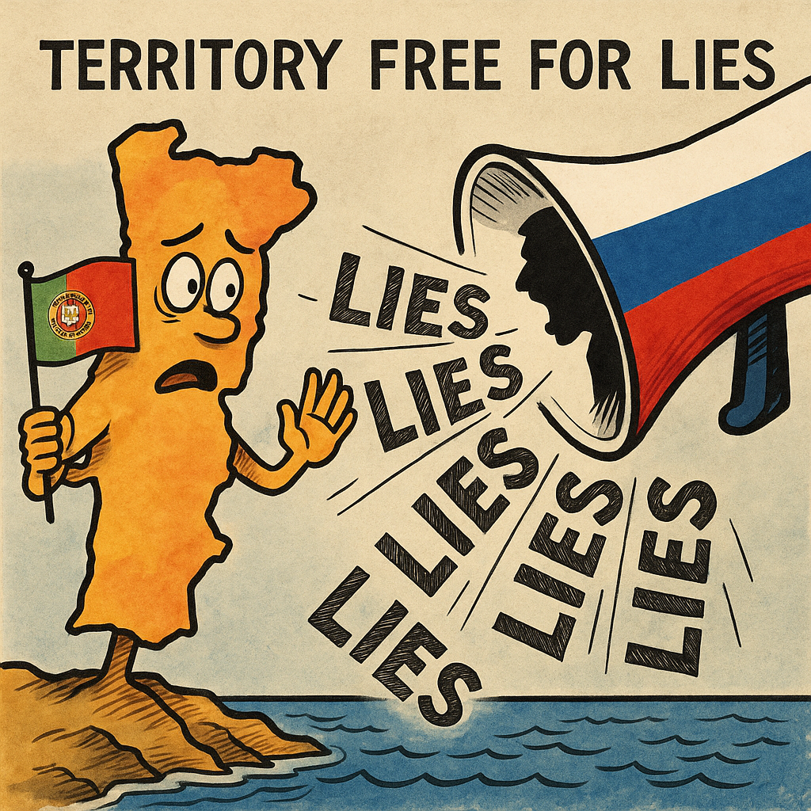

Publicado em 2025-04-24 00:05:02
Por Francisco Gonçalves – fragmentoscaos.eu
Portugal entrou para o pódio da vergonha informativa.
Segundo um estudo do Centro de Informação, Democracia e Cidadania, conduzido a partir da Bulgária, somos o 12.º país do mundo mais exposto à desinformação russa — uma posição que não surge por acaso, mas sim como resultado da fragilidade estrutural da nossa cultura democrática, mediática e cívica.
Durante os últimos quatro meses, foram publicadas 1550 peças de conteúdo pró-Kremlin por milhão de habitantes em território nacional. Traduzido em português claro: estamos a ser usados como laboratório experimental da propaganda russa.
E porquê Portugal?
Porque somos um país onde:
A Rússia não nos vê como ameaça — vê-nos como terreno fértil, mole, disponível. Um povo desiludido, um sistema fragilizado, uma juventude desorientada, uma justiça ineficaz.
Portugal é o campo ideal para plantar confusão.
A estratégia é velha, mas eficaz:
O que é mais perigoso?
Não é a propaganda em si. É a ausência de mecanismos para a desmontar.
Porque os nossos canais de televisão, já debatidos nas crónicas anteriores, são veículos de ruído, não de esclarecimento. E a escola portuguesa, com raras exceções, ainda não ensina a ler o mundo — apenas a decorar manuais desatualizados.
Estamos, portanto, perante um ataque não militar, mas mental.
E estamos a perder.
Portugal, pátria da passividade e da boa fé, está a ser colonizado pela mentira com sotaque estrangeiro — e sem que ninguém tome medidas sérias.
Se isto não é motivo de alarme nacional, então já nem sabemos o que é viver em democracia.
Mas enquanto houver lucidez — haverá crónica.
E enquanto houver crónica — haverá resistência.